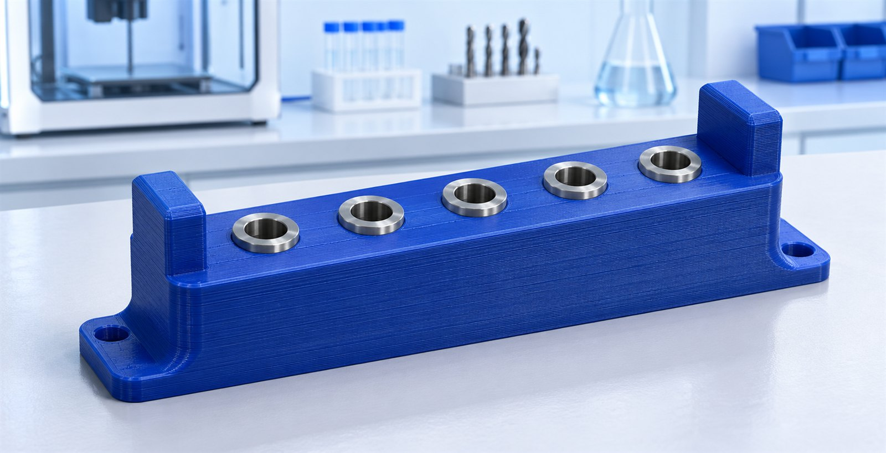
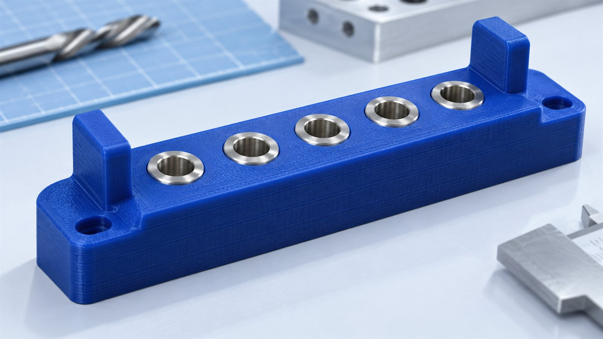
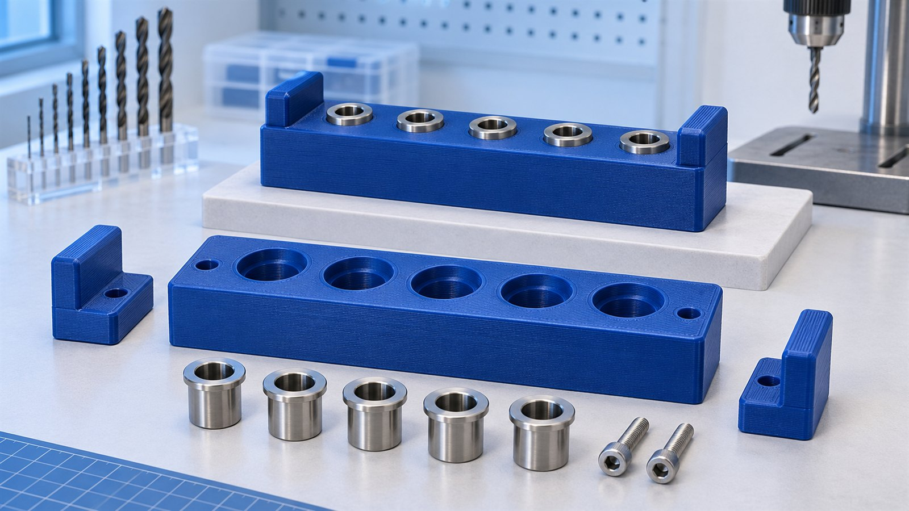

Кондуктор для повторяемой разметки и сверления заготовок. Печатный корпус задаёт положение сменных металлических втулок.

Порядок показан как пример рабочего маршрута. Заготовка и кондуктор закрепляются до начала операции.
Сверло проходит через металлическую втулку. Напечатанное отверстие не используется как износостойкая направляющая.
Внутренний диаметр втулки и её посадка согласуются под конкретный инструмент и заготовку.

Прижимает заготовку к длинной базе. Места контакта проверяются на пробном образце.
Задаёт начало координат. Стружку у упора убирают перед каждой новой заготовкой.

Пример — концепт для портфолио. Координаты, масса и срок условные; точность не аттестована.
160 г × 10 ₽/г
Ориентир: 3 рабочих дня после согласования.Металлические втулки и крепёж — отдельно.
Перед использованием нужны испытание на заготовке, проверка крепления и согласованный режим обработки. Печатная оснастка не заменяет защиту станка.
Изображения — художественная визуализация концепта. Геометрию и размеры уточняют по чертежам.